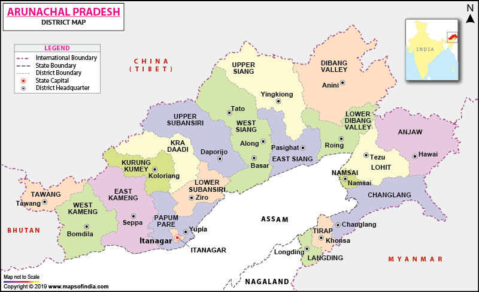

- The Land of Dawn-lit Mountains

Arunachal Pradesh also called “the land of rising sun”, lies in northeast India.
The state is the largest of the North-Eastern states, spread over an area of 83,743 km.
Arunachal Pradesh, with its snow-clad peaks, towering mountains, roaring rivers, high altitude meadows and vast unspoiled sub-tropical forests is aptly known as the Last Shangri La on Earth’.
Facts about Arunachal Pradesh
- The literal meaning of the state is “Land of Dawn-Lit Mountains”.
- North East Frontier Agency (NEFA) was renamed as Arunachal Pradesh by Late Sri Bibhabasu Das Shastri, the then Director of Research and K.A.A. Raja, the then Chief Commissioner of Arunachal Pradesh.
- It is the most linguistically enrich state of India. More than 30 languages like Wancho, Tagin, Dafia, etc. are spoken here but English is its official language.
- Tawang is a popular tourist destination of Arunachal Pradesh. 400 year old Tawang monastery is the largest monastery in India and second largest in the world after the Potala Palace in Lhasa, Tibet.
- The North East states of India are known as the Seven Sister States as Arunachal Pradesh is the largest of all seven sister states of North east.
- The state has more than 200 species of mammals thereby making it the region with the highest diversity of mammals in India.
- Arunachal is highly protected and a special permit is required for domestic as well as foreign tourists.
- Arunachal Pradesh shares a disputed border with China, which doesn’t officially recognize India’s sovereignty over the area. So, Indian government requires all tourists to get a permit before visiting there.
State Symbols
| State animal | Mithun |  |
| State bird | Horn Bill | |
| State flower | Foxtail Orchid | |
| State tree | Hollong |
- D’Ering Memorial (Lali) Wild Life Sanctuary
- Eaglenest Wild Life Sanctuary
- Sessa Orchid Wild Life Sanctuary
- Mouling National Park
- Pakhui/ Pakke Wild Life Sanctuary
- Namdapha National Park
- Yordi-Rabe Supse Wild Life Sanctuary
- Kamlang Wild Life Sanctuary
- Mehao Wild Life Sanctuary
Wildlife Sanctuaries and National Parks
- Tawang Monastery – This is the second largest monastery in the world after the Potala Palace in Lhasa, Tibet.
- GRL Gompa Monastery
- Malinithan temple (or Akashganga temple)
- Parasuram (Parshuram) Kund temple
- Gyangong Ani Gompa
- Urgelling Monastery
- Taktsang Monastery (Tiger’s Den)
- Rigyaling Gompa
- Gorsam Chorten
- Sacred Kund